AlpaServe：利用模型并行实现深度学习服务的统计复用
中文全文翻译
摘要
模型并行通常用于让单个大模型突破单设备内存限制。AlpaServe 进一步表明：即使模型能装入单设备，模型并行也可用于跨设备统计复用，在突发多模型负载下减少排队延迟。系统联合决定多个模型的放置、复制和并行策略，在并行开销与复用收益之间搜索。生产负载评估显示，它可在 99% 以上请求满足延迟约束时支持最高 10 倍到达率或 6 倍突发程度。
关键词：多模型 serving；模型并行；统计复用；突发负载；模型放置；SLO
1 简介
自导学习的进步使模型规模实现了指数级扩展。例如，像BERT和GPT-3这样的大型预训练模型，已经解锁了大量新的机器学习（ML）应用，从Copilot到 copy.ai 和ChatGPT。
由于这些大型模型对计算和内存的需求较高，服务起来具有挑战性。例如，GPT-3需要325GB内存来存储其参数，并且需要相应的计算量来进行推理。要满足这一模式，至少需要5块英伟达最新的Hopper 80GB显卡来承载这些重量，甚至可能需要更多GPU以实现实时运行。更糟糕的是，模型尺寸的爆炸式增长依然持续。面对模型规模的指数级增长，模型压缩和剪枝等技术已不够用，且往往以降低模型质量为代价。
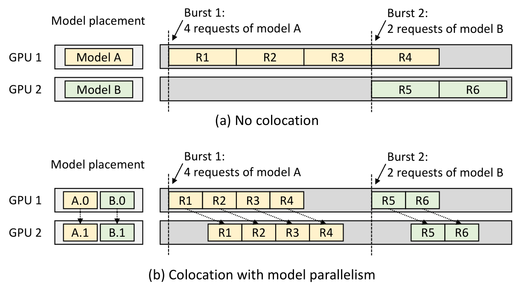
由于请求率波动大，提供足够资源以服务这些模型可能非常困难。例如，使用常见的工作负载迹，我们观察到需求频繁激增，平均值\(\times\) 50。满足服务水平目标（SLO）延迟通常意味着为这些峰值负载进行配置，这可能非常昂贵;为此目的分配的额外设备大多数时间都未被充分利用。更糟糕的是，在A/B测试或为特定领域提供微调模型（§2）等情境下，服务多个模型和多个大模型变体的情况越来越普遍。
本文研究如何高效地同时服务多个大型模型。具体来说，我们探讨了模型并行在在线模型服务中被低估的优势，即使是对于能够在单一设备上安装的小型模型。模型并行指的是在分布式设备上对模型进行分区和执行（§2.1）。模型并行的好处在 以吞吐量为导向 的训练环境中已被深入研究。然而，其对模型在 延迟敏感 设置下服务的影响仍然大多未被充分开发。
我们观察到，模型服务设计空间存在一些根本性的过渡点，挑战了关于服务的先有假设，即使是适用于单一设备的模型。例如，考虑两个型号和两个GPU，每个GPU都有足够的内存来存储一个完整模型。如图所示。1（a），几乎所有现有服务系统都采用的自然方法是为一个模型分配一个专用 GPU。这种做法看起来合理，因为将模型划分到GPU会带来通信开销，进而可能增加预测延迟。然而，我们发现引入额外的模型并行（直到每例执行时间实际上 增加）可以实现更广泛的布局策略，例如模型共址，从而在突发负载下改善系统的统计复用能力。见图 1（a），假设模型的执行时间为 \(y\)，则请求1至4的平均端到端延迟为 \((1y + 2y + 3y + 4y)/4 =2.5y\)。见图 1（b），假设模型并行开销为10%，请求1至请求4的平均延迟降至 \((1.1y + 1.6y + 2.1y + 2.6y)/4= 1.85y\)。与模型并行共址可以利用更多设备处理突发请求，并降低平均完成时间，尽管存在开销（§3.1）。即使我们batch 处理请求，案件依然成立（§6.5）。
不幸的是，如何最优地拆分和放置一组模型的决定非常复杂。虽然上述利用模型并行有其优势，但仍会增加开销，可能抵消这些好处，以减少突发性工作负载。例如，我们发现对模型并行效能影响特别大的轴是每GPU内存容量（§3.2），尽管其他因素（如到达模式、SLO）也可能产生显著影响。此外，除了 1中提出的运算间模型并行外，另一种模型并行——运内并行性，也存在其独特的权衡（§3.3）。最终，不同风格的并行及其权衡创造了一个复杂、多维、多目标的设计空间，现有系统大多忽视或未能驾驭。然而，在服务环境中不利用模型并行通常不是大型模型的选项，而不直接解决这一权衡空间会导致成本和服务延迟显著增加。
为此，我们介绍了AlpaServe2，这是一个自动且高效地探索不同并行化和布局策略在模型服务中权衡的系统。AlpaServe 采用集群资源规格、一组模型和周期性工作负载配置文件;然后对模型进行分区和配置，并调度请求以优化SLO实现率（即SLO内请求的百分比）。为协助AlpaServe设计，我们首先引入分类法，并量化模型服务中不同并行化策略之间的权衡（§3）。随后，我们介绍了关键算法以导航权衡空间（§4）。我们设计了一种迭代模拟器引导的模型布置算法以优化模型的共置，并设计了一种群划分算法，以寻找将簇划分为不相交的模型并行组的最佳方法。此外，我们扩展了现有的自动并行训练算法，使其更适合推理。
我们在一个64-GPU集群上评估AlpaServe的生产工作负载（§6）。评估结果显示，在一次优化一个指标时，AlpaServe可以选择将请求处理速率提高10\(\times\)，实现2.5\(\times\) 低延迟，或容忍比以往最先进服务系统更强的6\(\times\) 突发流量。
总之，我们做出以下贡献：
对不同模型并行策略在高效模型服务中权衡空间的详细分析。
在服务系统中引入模型并行的新型模型配置算法。
对AlpaServe在合成和生产工作负载下的全面评估。
2 背景
过去几年，从推荐到文本生成，开发出越来越强大的模型。因此，从这些模型中提供预测已成为现代云系统中不可或缺的工作量。这些工作负载的结构通常遵循简单的请求-响应范式。开发者提前上传预训练模型及其权重;运行时，客户端（无论是用户还是其他应用程序）向服务系统提交该模型的请求，服务系统会排队，分派到可用的 GPU/TPU，并返回结果。
这些模型服务系统的要求可能非常严格。为了满足用户需求，系统通常必须严格遵守延迟的 SLO。同时，必须持续运行的服务系统需要尽量减少昂贵加速器带来的运营成本。最小化服务成本可能具有挑战性，因为动态扩展计算资源在每个预测请求的关键路径上会过慢：仅将大型模型交换到加速器内存中可能需要数秒钟。此外，用户请求的到达过程存在显著且不可预测的突发性。为了满足严格的SLO，当前的服务系统被迫过度配置计算资源，导致集群利用率低。
在服务大型模型时，另一个出现的模式是使用多个相同或相似模型架构的实例。这通常体现在对大型未token数据进行预训练和对各种下游任务进行微调的实践中，这些可以显著提升准确性，但会导致同一模型架构出现多个实例。例如，Hugging Face 提供超过 9,000 个版本的精细调试 BERT。它们要么共享部分参数，要么完全不共享参数以提升准确性。此前的研究利用了共享参数的特性，但本文未考虑共享参数，因为AlpaServe主要针对通用设置，而全权重调优仍是一个主要应用场景。


2.1 模型服务中的模型并行
当试图满足服务性能要求或支持无法容纳于单一设备内存中的大型模型时，分布式并行模型执行是必要的。
从高层次来看，深度学习模型的分布式执行可分为两类：操作员内并行和操作员间并行。
操作员内部并行性。 DL模型由一系列多维张量上的算符组成，例如输入张量和权重张量的矩阵乘法。操作员内并行是指单个操作符被划分在多个设备中，每个设备并行执行部分计算。根据具体的分区策略及其与模型中前后算符的关系，分区可能需要参与的GPU之间通信，将输入拆分然后合并输出。
操作员内并行性在单请求执行中有两个好处。首先，它可以扩展目标模型可用的总计算量，从而降低端到端延迟。同样，它可以扩展模型用于存储输入、权重和中间值的总内存。成本就是前面提到的沟通开销。
操作员间并行性。 DL模型可用的另一种并行方式是操作员间并行，它将模型执行图的不同运算符分配到分布式设备上，以流水线方式执行（又称流水线并行）。在这里，设备仅在流水线阶段之间通信，通常通过设备对之间的点对点通信。
与操作员内部并行不同，流水线并行不会缩短单个请求的执行时间。事实上，由于流水线阶段间通信延迟适中，通常会增加执行时间，尽管传输数据总量通常低于操作员内部并行。相反，传统服务系统中操作员间并行的主要用途是允许模型超越单个GPU的内存限制。
3 动机与权衡分析
如前所述，这两种类型的模型并行都通过将模型划分到多个设备来减少每设备内存的使用。这项工作的一个关键动机是，我们可以利用该特性在一台设备上容纳更多模型，从而在处理突发请求时实现更好的统计复用。我们通过一系列实证考察和理论分析来探讨这一观点，首先是一个说明性示例（§3.1），随后是模型并行何时有益的实证分析（§3.2）、模型并行的开销（§3.3）以及基于排队理论的分析（§3.4）。本节所有实验均在配备8块NVIDIA 16GB V100显卡的AWS EC2 p3.16xlarge实例上进行。
3.1 案例研究：一个双模型示例
我们从一个示意性实验开始，展示模型并行如何有利于多个模型的服务。我们使用两块GPU服务两台Transformer模型，每个模型有67亿参数（存储FP16权重为13.4 GB）。由于每块GPU有16GB内存，只能容纳一款型号。单个请求在一块GPU上处理大约需要0.4秒。
我们比较以下模型的配置，对应 于1中的策略。第一种是 简单的放置，由于内存限制，我们在每个GPU上放置一个模型。第二种是 模型并行布局，利用操作间并行将每个模型划分为两阶段流水线，让每个GPU执行每个模型的一半。
当每个模型的请求都遵循独立的泊松过程，到达率为1.5请求/秒时，我们评估了这两个位置。 2 显示了累计分布函数（CDF）和请求延迟的平均值（包括GPU执行时间和排队延迟）。模型并行布置将简单布置的平均延迟从0.70秒降低到0.55秒，提升了1.3\(\times\) 。加速来自更好的突发容忍度：当突发超过单个GPU的能力时，只需简单放置即可开始排队请求。然而，只要对方模型不接收大量请求，模型并行布局可以通过统计复用GPU使用两个GPU来满足流行模型的请求。
随着突发性提高，这种效应会更加明显，我们可以用与上述相同的平均请求率但方差系数（CV）更高的伽马请求到达过程来证明这一点。如 3所示，平均延迟加速提升至1.9\(\times\)。 5 显示了对应总集群利用率随时间的代表性迹。注意，对于每个请求突发，模型并行布置可以使用整个集群，且处理时间仅为一半，而简单布置则只能使用半数集群。
此外，我们还评估了某一模型收到的请求多于另一模型的情况。在 4中，我们使用泊松到达法，但允许20%的请求请求使用模型1,80%请求模型2。虽然复制在模型1请求中表现略佳，但在模型2请求中相比模型并行放置则明显差。对于模型并行部署，由于两个GPU在两个型号之间共享，对两个型号的请求遵循相同的延迟分布。总体而言，模型并行布置平均延迟降低了6.6\(\times\)。
3.2 模型并行何时有益
为了进一步探讨模型并行在服务中的细微差别，我们将部署规模扩大到8个GPU和8个Transformer模型，每个模型参数为2.6B。作为基础设置，我们将每个模型的请求设置为Gamma进程，平均请求率为20个/秒，视值为3;然后我们调整一系列因素以观察其影响。注意，我们评估的一些设置在真实硬件上是不可能实现的（例如，超过单个设备的内存容量），因此我们利用第5节引入的模拟器。正如第6.1节所验证的，模拟器的保真度非常高。
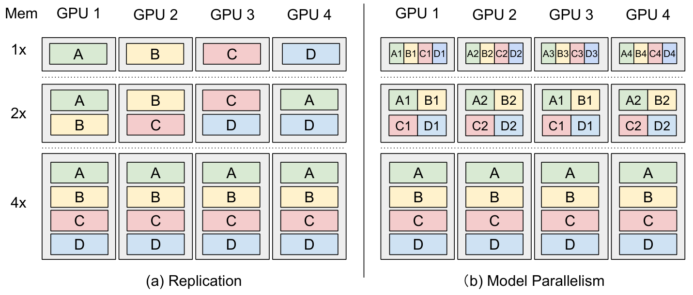
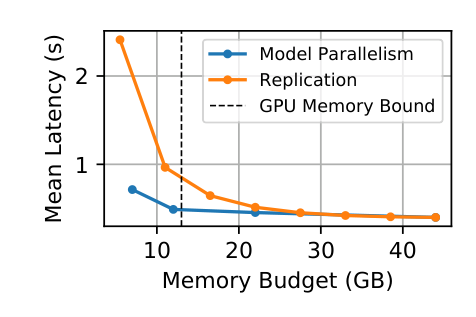
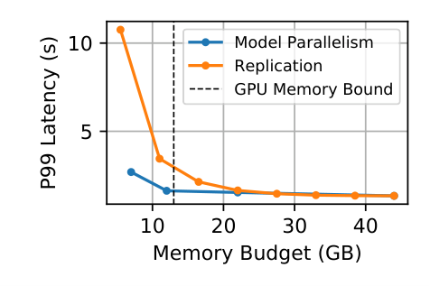
在这种情况下，模型较小（5.2GB），因此一块GPU也可以存储多个模型，无需模型并行。我们比较两种放置方法：（1） 复制。 在此环境中，我们会将模型复制到不同设备，直到每个设备无法容纳额外的模型。由于所有模型平均承受相同数量的载荷，我们对每个模型重复次数相同（7a）。（2） 模型并行。 这里我们使用操作员间并行，并均匀地将Transformer层分配给不同的 GPU。
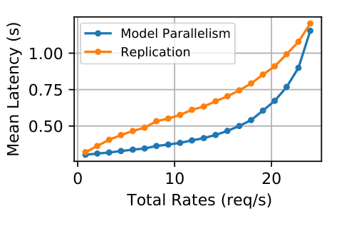
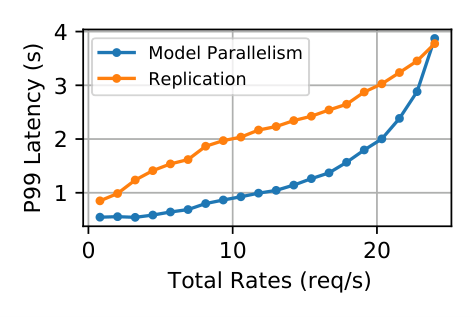
设备内存。 我们评估了两种放置方法在不同设备内存容量下的均值和尾部延迟。为了复制，更多的GPU内存可以把更多模型装到一个GPU上。对于模型并行，更多的GPU内存还可以减少流水线阶段数量，并降低开销，如 7b。所得的平均值和P99延迟在 8中显示。随着内存增加，更多模型可以容纳在一个GPU中，因此统计复用的好处会减弱，因为复制也可以有效地利用多台设备来向单一模型提供突发请求。当GPU内存容量足够大以容纳所有模型时，模型并行不会带来任何益处。
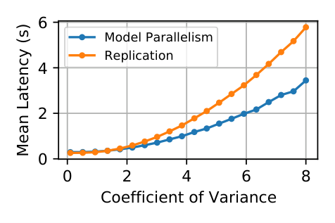
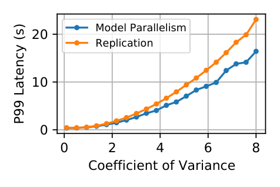
请求到达。 我们改变到达过程的参数，并将复制的布置与带有8级流水线并行的模型并行布置进行比较。9展示了到达率变化的平均值和P99延迟 结果。当到达率较低时，模型并行可以大幅降低服务延迟。然而，当到达率接近集群的峰值服务率时，模型并行布置的优势开始减弱。最终，它的表现开始比复制差。这是因为当所有模型均等饱和时，复制的配置能够实现高效的簇利用，而模型并行带来的统计复用则无益处。相反，模型并行的开销（第3.3节）开始成为一个重要因素。
CV变化的平均值和P99延迟结果均为 10。随着CV的提升，请求变得更加突发，模型并行的益处也更加显著。结果显示，在更高的 CV 下，模型并行能远远超过复制的性能。
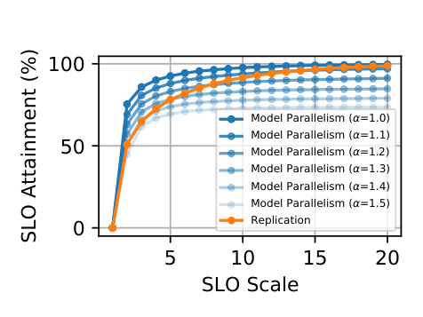
3.2.1 服务水平目标。
在预测服务环境中，通常存在严格的延迟SLO，且在这些截止日期之后的预测往往会被舍弃。例如，广告系统可能选择不显示广告，而不是延迟用户内容的渲染。在这种情况下，服务系统的目标是优化在截止时间内完成请求的百分比，即 SLO达成率。
本实验中，我们测量SLO如何影响安置方法的性能。我们将复制和模型并行放置与8级流水线并行进行比较。在执行过程中，即使我们立即安排了截止日期，也会放弃那些会超过截止日期的请求。我们将SLO调整到单设备执行延迟的不同乘数（SLO按11倍缩放），并比较两种方法的SLO实现情况。
与 11类似，当SLO紧缩（\(<10\times\) 模型延迟）时，模型并行可以大幅提升SLO的实现。然而，当SLO变得松散时，其SLO的实现率趋于平稳，但复制位置的实现则持续增长。这一结果与之前的实验共享核心逻辑：当SLO变得松散时，等待队列中可能保留更多请求，从而降低请求的有效突发性。当大量请求被排队时，系统受限于其总处理能力，而总处理能力可能会受到模型并行开销的影响。在现实世界中，SLO的要求通常低于模型执行延迟的 \(5\times\) ，而模型并行可以提升SLO的实现。
3.3 模型并行开销
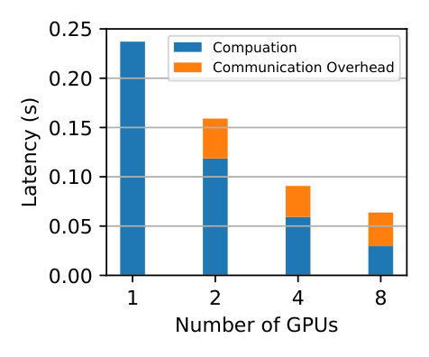
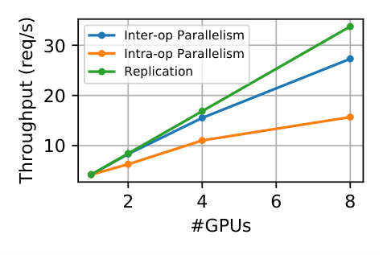
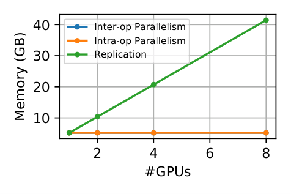
本节进一步探讨不同模型并行策略的开销及其对服务性能的影响。类似于 11的设置，我们手动修改模型并行的开销。具体来说，让单个模型在GPU上运行的延迟被 \(L\) ，流水线阶段的数量 \(n\)。我们设置了流水线执行的总延迟为 \(\alpha L\) ，每个流水线阶段的延迟为 \(\alpha L/n,\) ，其中 \(\alpha\) 是控制开销的参数。当 \(\alpha = 1,\) 并行性没有开销，而 \(\alpha\) 越大意味着开销越高时。
我们展示了 13年。如果模型并行没有开销（\(\alpha = 1\)），它总能胜过复制，因为它能够多路复用设备。当开销增加且SLO较低时，模型并行仍然优于复制。然而，随着SLO的增加，有效突发性降低，性能主要依赖开销。
鉴于开销会极大影响服务性能，我们在 16中对模型并行开销的多重来源进行了详细研究。对于操作间并行性，当将单个模型划分为多个阶段时，不同阶段需要通信中间张量，我们将此开销记为 通信开销。此外，流水线执行会被最慢阶段的执行时间限制，使得有效延迟为流水线阶段数乘以最慢阶段的延迟。我们记作 不均匀划分开销。与 14类似，对于操作间并行，大部分开销来自不同流水线阶段之间的延迟不平衡，而非阶段间的通信。虽然我们之前的讨论主要聚焦于运内并行，但另一种模型并行——运内并行，性能特性截然不同。其开销仅由多个设备之间的集体通信带来，由于数据依赖性，无法与神经网络计算重叠。从 15开始，我们可以看到运内并行的通信开销远高于运内并行。
最后，我们比较了不同模型并行布置与 复制布置的延迟、吞吐量和内存消耗。由于不同阶段之间的顺序依赖性，操作间并行无法降低单个输入数据的执行延迟。相反，由于阶段间的通信，延迟略高。另一方面，运内并行通过不同GPU的并行执行在很大程度上可以降低延迟（17）。然而，由于运内并行可以流水线化不同阶段的执行，且仅传输相对较小的数据量，因此其吞吐量优于运内并行（18）。由于两种方法都将模型权重张量分配到不同的GPU上，总内存使用量随着GPU数量的增加保持不变（19）。这使得不同GPU在多个模型间的统计复用成为可能。
最终，并行化策略与其与集群资源、到达模式和服务目标的相互作用之间的权衡构成了一个复杂的设计空间。
3.4 排队理论分析
在本节中，我们利用排队理论对第3.2节和第3.3节的结论进行数学验证。具体来说，我们分析输入遵循泊松到达过程的情况。由于深度学习推理任务的执行时间高度可预测，我们假设请求的服务时间是确定性的。对于单设备情况，假设对某型号的请求速率为\(\lambda_0\)且单设备延迟与利用\(\lambda_0 D < 1\) \(D\)，则该 M/D/1 队列中\(L_Q\)请求数和平均延迟\(W\)为：\[L_Q = \frac{\lambda_0 D}{2 (1 - \lambda_0 D)},\quad W = D + L_Q D = D + \frac{\lambda_0 D^2}{2 (1 - \lambda_0 D)}.\]
现在考虑第3.1节中的例子。设 \(p\lambda, (1 - p)\lambda\) 为两个模型的平均请求率，其中 \(p \in [0, 1]\) 控制两个模型的请求百分比。对于简单的放置，平均延迟可以作为两个独立队列的平均延迟推导出来： \[W_\mathit{simple} = D + \frac{p^2\lambda D^2}{2 (1 - p\lambda D)} + \frac{(1 - p)^2\lambda D^2}{2 (1 - (1 - p)\lambda D)}.\] 注意， \(W_\mathit{simple}\) 在 \(p = 1/2.\) 时达到最小值 \(p\) 直观地说，当不完全是一半时，一种模型接收的请求比另一种多。这部分请求的队列延迟较长，导致整体平均延迟更高。
对于模型并行情况，两个模型的请求合并为一个速率为 \(\lambda.\) 的泊松进程。对于流水线并行，假设单一输入的延迟为 \(D_s\) ，最大阶段延迟为 \(D_m\)，则平均延迟为 \[W_\mathit{pipeline} = D_s + \frac{\lambda D_m^2}{2 (1 - \lambda D_m)}.\]
假设模型并行开销不存在，那么 \(D_s = 2 D_m = D.\) 首先考虑 \(p = 1/2\) （2）的情况。我们有 \[\begin{aligned} W_\mathit{simple} = D + \frac{\lambda D^2}{4 - 2\lambda D}, \quad W_\mathit{pipeline} = D + \frac{\lambda D^2}{8 - 4\lambda D}. \end{aligned}\] 在这种情况下，模型并行执行的等待时间是简单放置等待时间的一半，如 2中的垂直线所示。当 \(p\) 不 \(1/2,\)时， \(W_\mathit{simple}\) 会增加，而 \(W_\mathit{pipeline}\) 保持不变，因此 \(W_\mathit{simple}\) 和 \(W_\mathit{pipeline}\) 之间的差距会更大，比如 4。
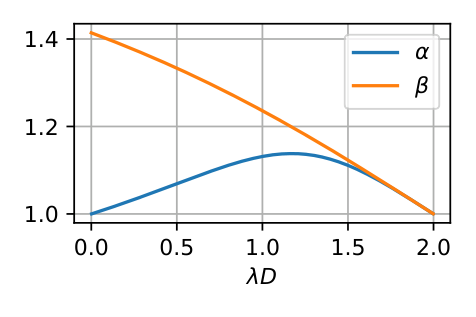
接下来，我们考虑模型并行产生开销的情况。我们分别测量§3.3 中的两种开销：通信开销 \(D_s = 2D_m = \alpha D\)，其中 \(\alpha \ge 1\) 为开销因子。考虑到不平整赛段带来的开销，我们认为 \(D_s = D\) 仍然成立，但 \(D_m = \beta D /2\) \(\beta \ge 1\) 是开销因素。为了保持 \(W_\mathit{pipeline} \le W_\mathit{simple},\) 我们可以分别得到最大 \(\alpha\) 和 \(\beta\) 作为总利用率的函数， \(\lambda D\) 我们可视化函数为 21。当利用率较高时，统计复用的好处会减弱，因此开销需要较低，如第3.2节所述。另一方面，当利用率非常低时，大多数请求不会排队，因此通信开销 \(\alpha\) 必须很低，才能保持处理延迟较低。注意，这里的最大开销基于均匀泊松到达分布。更突发或不均匀的到达分布会使简单布置表现更差，而模型并行布置的效果优于简单复制布置，且开销更高。
4 方法
从第3节我们可以看到，有效利用模型并行进行深度学习服务存在几个关键挑战：
推导高效的模型并行推断策略，以减少模型并行的开销。具体来说，找到一种划分策略，以最小化操作员间的阶段不平衡。
根据到达模式确定模型并行位置，以最大化SLO实现。
我们专门创建 了AlpaServe ，以应对这些挑战。AlpaServe的运行时架构如图所示。22. AlpaServe 利用集中式控制器向不同组发送请求。3 每个组在共享的模型并行运行时托管多个模型副本。本节介绍了AlpaServe的架构以及在模型服务系统中高效利用模型并行的关键算法。
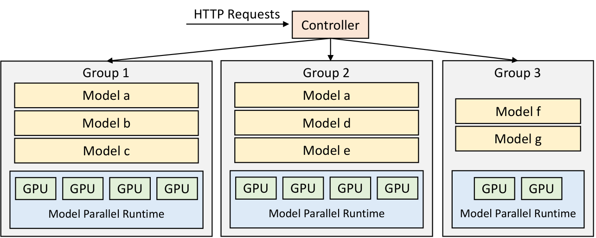
4.1 自动并行推断
由于不同的并行化配置在延迟和吞吐量上有不同的权衡，我们需要为每个模型枚举多个可能配置，并让布局算法为整个集群中的所有模型选择最佳组合。因此，给定一个模型，AlpaServe首先运行一个带有各种约束的自动并行编译器，生成可能配置的列表。我们在现有的自动并行训练系统Alpa基础上构建了多个扩展，使其适合生成服务并行化策略。Alpa 包含两种高效模型并行分区的流程：操作间切换和操作内切换。运内通道使用动态规划（DP）算法来确定最优的运内并行计划，并调用每个潜在流水线阶段的运内通道，该阶段以整数线性规划（ILP）问题表述，以分析其与最优运内并行计划的延迟。在AlpaServe中，我们保留了两个编译通行证，但会延长这两张通行证用于发货。
Alpa 中的操作间传递优化了整体流水线执行延迟，包括前向和反向传播时间以及权重同步。然而，在工作负载服务中，仅执行前向传播，无需权重同步。因此，我们将AlpaServe中的动态规划重新表述为仅专注于最小化最大阶段延迟。具体来说，将 \(F(s, k)\) 表示为将第1层切片到\(k\)为\(s\)阶段时的最大延迟。我们可以推导出\(F\)为\[\begin{aligned} F(s, k) = \min_{1 \le i \le k} \left\{\max\{F(s-1, i - 1), \mathit{latency}(i, k)\}\right\}, \end{aligned}\]，其中\(\mathit{latency}(i, k)\)表示由\(i\)层到\(k\)的阶段延迟。在 Alpa 中，由于前向和后向传递之间的复杂依赖关系，所有可能\(O(K^2)\)组合的 \(\mathit{latency}\) 功能都作内传递来分析。在AlpaServe中，由于流水线阶段只进行前向传播，且只在层边界之间传递一次中间结果，我们可以通过只对\(K\)层进行分析，并将\(\mathit{latency}(i, k)\)作为层\(i\)到\(k\)的延迟之和来加速剖析.这种加速使我们能够高效枚举不同的操作内和内部设备分区设置，并在第4.2节生成配置算法的并行策略列表。
在操作内，我们扩展了 Alpa 中的 ILP，去除所有使用数据并行的配置。对于服务工作负载，由于不需要权重同步，数据并行性可以通过复制放置实现。是否复制模型的决定留给了第4.2节的布局算法。
4.2 放置算法
给定一组模型和固定集群，AlpaServe将集群划分为若干设备组。每组设备选择部分模型进行共享的并行配置。不同群体可以持有相同的模型作为复制品。对模型的请求会被分派到拥有该模型副本的组。我们称特定集群组分区、模型选择和并行配置为 一种布局。我们的目标是找到一个能最大化SLO 达成率的放置方案。
然而，找到最优位置是一个复杂的组合优化问题。整体的配置空间随着设备数量和模型数量的增加呈指数增长。更糟糕的是，客观的“SLO达成”没有简单的任意到达分布解析公式。现有的队列理论工具和近似只能分析§3.4 中的简单情况，无法建模更复杂的情况。因此，我们采用了模拟器引导的贪婪算法，调用模拟器来计算SLO的达成。
在 AlpaServe 中，为了计算给定请求和位置下的 SLO 实现，我们假设事先知道到达过程。虽然短期爆发性无法预测，但较长时间尺度（如小时或天）的到来模式通常是可预测的。鉴于这种可预测性，AlpaServe要么直接使用历史请求迹，要么从该迹线拟合一个分布，并从该分布重新采样新的轨迹作为模拟器的输入负载，以计算SLO的实现。
模型列表\(M\)、设备组列表\(G\)、组并行配置\(P\)、工作负载\(W\)、波束大小\(k\)（默认=1）。模型选择\(\mathit{best\_sel}.\) \(\mathit{best\_sel} \leftarrow \emptyset\) \(\mathit{beam\_sels} \leftarrow \{\emptyset\}\) \(\mathit{new\_sels} \leftarrow \emptyset\) 像第4.1节所述的并行化模型。 \(\mathit{m_{parallelized}} \leftarrow \text{parallelize}(m, g, p)\) \(\mathit{sel}' \leftarrow \mathit{sel}.\text{add\_model\_to\_group}(\mathit{m_{parallelized}}, g)\) \(\mathit{sel}'.\mathit{slo\_attainment} \leftarrow \text{simulate}(\mathit{sel}', W)\) \(\mathit{new\_sels}.\text{append}(\mathit{sel}')\) \(\mathit{beam\_sels} \leftarrow \text{top-}k\text{\_SLO\_attainment}(new\_sels)\) \(\mathit{sel}^* \leftarrow \text{pick\_highest\_SLO\_attainment}(\mathit{beam\_sels})\) \(\mathit{best\_sel} \leftarrow \mathit{sel}^*\)返回 \(\mathit{best\_sel}\)
我们设计了一个两级的布局算法：给定一个集群组划分和每个组共享的模型并行配置， [alg：greedy-placement] 使用模拟器引导的贪婪算法决定每个组应选择哪些模型。然后， [alg：group-partition] 枚举了各种潜在的簇划分和并行配置，并比较从 [alg：greeddy-placement] 获得的 SLO 实现，以确定最优位置。
给定一个群组划分，每个组模型并行配置固定， [alg：greedy-placement] 通过波束搜索算法迭代选择模型副本：每次迭代时，枚举所有可能的（模型、组）对，并用§4.1中的算法对设备组的模型并行化，并检查模型是否可在内存约束下归入该组。对于所有有效选择，它运行模拟器并计算SLO达成。然后选择顶部\(k\) 解，进入下一次迭代。当无法再将副本放入任何组时，算法终止。
[算法：贪婪布局]的复杂度为\(O(MGRSB)\)，其中\(M\)是模型数量，\(G\)是组数，\(R\)是根据内存约束可放置的副本数，\(S\)是工作负载中的请求数（仿真时间与请求数成正比），\(B\)是梁的大小。当请求数量较少时，对于我们的中型集群来说，它运行得相当快。当请求数量非常大时，我们提出另一种启发式来加速：我们无需在每次迭代中评估所有（模型、组）对，而是只需运行一次模拟器，并将未服务请求最多的模型放入利用率最低的可用组。这将时间复杂度降低到\(O((M+G)RS)\)。我们发现该启发式解的SLO达成率高于基准测试中原始算法的98%。
模型列表\(M\)、集群\(C\)、工作负载\(W\)。\(\mathit{best\_plm}.\) \(\mathit{best\_plm} \leftarrow \emptyset\) \(\mathcal{B} \leftarrow \text{get\_potential\_model\_buckets}(M)\) \(\mathcal{H} \leftarrow \text{get\_potential\_device\_buckets}(C, B, k)\)每个桶单独获取位置。\(\mathit{plm}_i^* \leftarrow \emptyset\) \(\mathcal{G} \leftarrow \text{get\_potential\_group\_partitions}(H_i)\) \(\mathcal{P} \leftarrow \text{get\_potential\_parallel\_configs}(G)\) \(\mathit{plm} \leftarrow \text{greedy\_selection}(B_i, G, P, W)\) \(\mathit{plm}_i^* \leftarrow \mathit{plm}\) \(\mathit{plm}^* \leftarrow \text{concat}(\mathit{plm}_1^*,..., \mathit{plm}_k^*)\) \(\mathit{best\_plm} \leftarrow \mathit{plm}^*\) \(\mathit{best\_plm}\)
[alg：group-division] 枚举了不同的组划分和模型并行配置，并通过多次调用 [alg：greedy-placement] 选择最佳方案。在设计 [alg：group-partition]时，我们首先注意到的是将小模型和大模型放在同一组中会导致护送效应，小模型的请求必须等待大型模型的请求，从而错过SLO。因此，在 [alg：group-division]中，我们首先将模型聚类到模型桶中。每个桶包含一组大小相近的模型，每个模型只分配到一个桶。具体来说，该函数 get_potential_model_buckets 返回所有可能将延迟差异大于阈值的模型分拆到不同的不相交桶中。然后我们枚举了所有可能将设备分配到每个桶的方法 get_potential_device_buckets。
由于不同的桶包含不相交的模型集合，我们可以单独找出每个桶的最佳位置。对于每个桶，我们枚举了将该桶中设备划分为多个组的可能方法， get_potential_group_partitions 并用该方法 get_potential_parallel_configs枚举每个组的潜在并行配置。然后我们将[ alg：greedy-placement] 调用，将 greedy_placement 模型放入模型桶中的模型，映射到设备桶中的组。我们会把整个工作负载 \(W\) 发送到 [alg：greedy-placement]，它会忽略当前桶外的模型请求。最后，通过将所有桶的解串接得到完整解。算法返回在枚举搜索过程中找到的最佳解。
枚举所有可能选项可能较慢，因此我们使用以下启发式方法来修剪搜索空间。直观上，我们希望不同桶每秒响应的请求数量相近。因此，我们剔除了每个桶每秒可处理请求数估计差异较大的桶配置。此外，在 get_potential_group_partitions 和 get_potential_parallel_configs中，我们假设所有组的大小和并行配置相同，唯独最后一组在设备数不能被组大小整除时使用。
4.3 运行时调度
我们使用一个简单的策略在运行时调度和调度请求。所有请求都会发送到集中式控制器。控制器将每个请求分派到队列长度最短的组。每个组管理先到先得的队列。当一个组收到请求时，会检查是否能在SLO下执行请求，如果无法就拒绝请求。这是因为DNN模型的执行时间非常可预测，可以通过分析提前获得。在我们的大多数实验中，我们不包含如batch、交换和抢占等高级运行时策略。这些技术与模型并行是互补的。尽管如此，我们讨论了他们如何融入我们的体系。
batch 处理。 batch 处理同一模型的多个请求可以提高GPU利用率，从而提高服务系统的吞吐量。在我们的系统中，batch确实有帮助，但收益有限。这是因为我们主要面向大型模型，小批量的GPU已经能完全供给GPU，这一点在§6.5中有验证。为了隔离模型并行的好处并使结果更易解释，我们决定禁用本文中除第6.5节实验外的所有batch。
抢先。 最佳调度决策通常依赖于未来的到货，利用优先权可以帮助纠正之前的次优决策。先到先得政策可能导致在执行时间差异显著的模型被放入同一组时，导致车队效应。我们预计，优先优先的“最少松懈”政策可以缓解这些问题。
交换。 从CPU或磁盘到GPU内存的加载开销对于大型模型来说非常重要，这正是本文的目标，因此我们在AlpaServe中不实现交换功能。我们假设所有模型都放在显卡上。这通常是因为SLO要求严格且速率较高，尤其是大型模型。模型在AlpaServe中的配置可以通过定期更换（例如每24小时更新一次）进行更新。
容错性。 虽然当前AlpaServe设计并未将容错性作为重点，但我们也承认容错性面临的几个潜在新挑战：在模型并行下，单个GPU的故障可能导致整个组发生故障。此外，使用集中式控制器还存在单点故障。
5 实现
我们用大约4000行Python代码实现了一个真实系统和一个AlpaServe模拟器。实际系统是在现有的模型并行训练系统Alpa之上实现的。我们扩展了其推理设置的自动并行算法，以获得模型并行策略。然后我们为每个组启动 Alpa 运行时，并通过集中控制器向这些组发送请求。
该模拟器是一种连续时间的离散事件模拟器。模拟器维护全局时钟，并模拟集群上的所有请求和建模执行。由于模拟器只模拟离散事件，其速度比真实实验快了几个数量级。在我们的实验中，24小时的追踪不到1小时。由于DNN模型执行的可预测性，模拟器的保真度非常高，这一点在§6.1中得到了验证。
6 实验评估
本节评估AlpaServe在多种模型和工作负载条件下的服务能力。评估涵盖多种型号尺寸，包括适合和不适合单一GPU的型号，我们证明AlpaServe在所有型号尺寸下始终优于强基线。此外，我们评估AlpaServe对不断变化的到达模式的鲁棒性，并对拟议技术进行消融研究。评估结果显示，AlpaServe能够大幅提升各项性能指标。具体来说，AlpaServe可以选择节省多达 \(2.3\times\) 台设备，处理 \(10\times\) 更高速率、 \(6\times\) 更强的突发性，或 \(2.5\times\) 严格的SLO，同时满足超过99%请求的延迟SLO。
6.1 实验装置
集群测试场。 我们将AlpaServe部署在一个拥有8个节点和64个GPU的集群上。每个节点都是AWS EC2 p3.16xlarge实例，配备8块NVIDIA Tesla V100（16GB）GPU。
模型设置。 由于Transformer是大型模型的默认骨干，我们选择了两个具有代表性的大型Transformer模型族：BERT和GShard MoE进行评估。4 在机器学习的实践中，大型模型权重通常先预训练，然后针对不同任务进行微调成不同版本。因此，对于每个模型族，我们选择几个最常用的模型尺寸，然后在每个尺寸创建多个模型实例进行实验。此外，我们设计了一些模型集，以测试不同模型条件下的服务系统;关于模型大小、测试平台GPU上的推理延迟以及每个模型集中的模型实例数量的详细信息，详见表 1。
| 名称 | 规模 | 延迟（毫秒） | S1 | S2 | S3 | S4 |
|---|---|---|---|---|---|---|
| BERT-1.3B | 2.4GB | 151 | 32 | 0 | 10 | 0 |
| BERT-2.7B | 5.4 GB | 238 | 0 | 0 | 10 | 0 |
| BERT-6.7B | 13.4 GB | 395 | 0 | 32 | 10 | 0 |
| BERT-104B | 208 GB | 4600 | 0 | 0 | 0 | 4 |
| MoE-1.3B | 2.6 GB | 150 | 0 | 0 | 10 | 0 |
| MoE-2.4B | 4.8 GB | 171 | 0 | 0 | 10 | 0 |
| MoE-5.3B | 10.6 GB | 234 | 0 | 0 | 10 | 0 |
指标。 我们以 SLO 达成率 作为主要评估指标。在特定的SLO达成目标（比如99%）下，我们还关注另外四个指标：（1）系统所需的最小设备数量，（2）最大平均请求率，（3）系统可支持的最大流量突发，以及（4）系统可处理的最小SLO。我们特别关注SLO达到 \(99\%\) （所有曲线图中均用垂直线表示），但也会调整（1）至（4）中的每个变量，并观察SLO达成的变化。
模拟器保真度。 我们希望在广泛的模型、工作负载和资源设置下研究系统行为，但有些设置超出了我们的测试平台能力。此外，在测试平台上进行所有实验以获取持续数天的真实痕迹成本和时间都非常高。为缓解该问题，我们使用§5 中引入的模拟器进行大多数实验，注意到DNN模型的执行即使在并行设置下也具有高度可预测性。我们在第3页研究模拟器的保真度。给定两种模型布置算法，我们比较模拟器和测试平台在不同 SLO尺度下实际运行报告的SLO成就。所有情况下误差均小于2%，验证了我们模拟器的准确性。此外，我们在第6.3节中对集群测试平台进行实验。
|
选择性复制 | 阿尔帕塞尔夫 | ||||
|---|---|---|---|---|---|---|
| 2-3 | 真实系统 | 模拟器 | 真实系统 | 模拟器 | ||
| 0.5x | 00.0% | 00.0% | 33.3% | 33.3% | ||
| 1x | 00.0% | 00.0% | 53.5% | 53.2% | ||
| 1.5x | 29.7% | 30.2% | 64.1% | 64.7% | ||
| 2x | 36.9% | 36.8% | 79.0% | 80.6% | ||
| 3x | 49.5% | 48.5% | 91.4% | 92.1% | ||
| 4x | 58.6% | 57.8% | 96.4% | 96.5% | ||
| 5x | 64.9% | 64.0% | 97.6% | 97.9% | ||
| 10x | 83.1% | 82.6% | 100.0% | 99.7% | ||
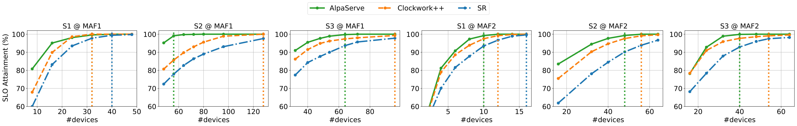
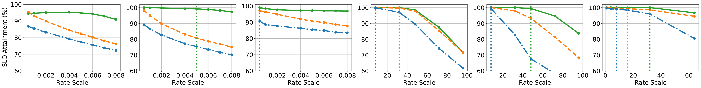
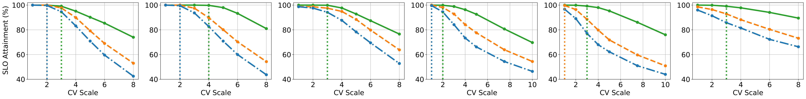
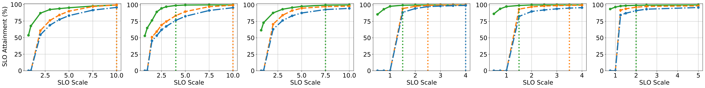
6.2 与真实工作负载的端到端结果
本节将 AlpaServe 与公开真实痕迹的基线方法进行比较。
工作量。 据我们所知，目前还不存在开源生产的机器学习推断方法。因此，我们使用以下两个生产跟踪作为代理：Microsoft Azure 函数跟踪 2019（MAF1）和 2021（MAF2）。它们最初是在两周内从 Azure 无服务器函数调用中收集的，现已被重新用于机器学习服务于研究。这两条线路的交通模式各异。在MAF1中，每个函数接收稳定且密集的请求，速率逐渐变化;在MAF2中，流量非常 突发 ，且以高度 偏斜 的方式分布在各个函数之间——某些函数接收的请求数量级多于其他函数。请注意，大多数之前的作品仅在MAF1上进行评估。由于函数数量多于模型，按照之前的工作，给定标签1中的模型集，我们对模型进行轮询函数，以为每个模型生成流量。
布置。 SLO的成就取决于许多因素。对于第6.1节提到的每个度量（1）-（4），我们设定一个默认值，例如默认SLO与推理延迟（SLO比例=5） \(5\times\) 紧密。这形成了 默认设置，基于此，我们一次调整一个变量（同时修正其他变量），观察其如何影响最终的SLO成就。为了改变描述交通模式的两个变量（3）和（4），我们遵循Clockwork和Inferline，将原始痕迹切入时间窗口，并用参数化速率和方差系数（CV）的伽马过程拟合每个时间窗口的到达者。通过对速率和CV进行扩展，并从过程中重采样，我们可以分别控制速率和突发性。
基线。 我们将AlpaServe与两种基线方法进行比较：（1） 选择性复制（SR）：使用AlpaServe的放置算法而不使用模型并行，该算法模拟了多种现有服务系统的策略;（2） Clockwork++：服务于Clockwork系统的最先进模型的改进版。最初的Clockwork会不断更换型号到GPU中。这对非常小的模型（例如有数百万参数）有帮助，但在较大模型中会带来显著的交换开销。为了公平对比，我们在模拟器中实现了Clockwork++，它按照Clockwork的替换策略在每隔两个窗口5 的边界处交换模型，使用SR算法，但 假设交换开销为零。我们认为这代表了Clockwork表现的假设上限。由于所有基线只能支持能够容纳于一个GPU内存的模型，6 我们在本实验中使用了Tab 1 中的S1、S2和S3模型集。
SLO 达成率与集群规模的比较。23的第一行显示了服务特定（模型集，trace）对时簇大小不同的SLO达成。AlpaServe始终优于这两个基线，且使用更少的设备，凭借模型并行实现99%的SLO实现。通过将一个模型副本拆分到\(N\)设备，AlpaServe可以实现类似于为仅复制方法创建副本\(N\)吞吐量;但请注意，AlpaServe只使用一个内存副本。令人惊讶的是，虽然我们让Clockwork++动态调整流量且零开销，但AlpaServe在静态放置中仍然胜出;这是因为模型并行布置本质上对突发流量更具鲁棒性。
值得注意的是，仅复制方法最多只能在 V100（13GB 内存预算）上放置 2 个 BERT-2.6B 副本，从而获得相当大的内存比例，而模型并行则可以避免这些内存分数，并实现模型的更灵活布局。
SLO 达成率与请求率。23号的第二排会根据工作量的速率变化。对于像MAF1这样稳定的trace，AlpaServe可以处理比基线更高的速率。对于偏斜且高度动态的MAF2，其流量由少数模型主导且变化迅速，而基于复制的方法则必须分配大部分GPU为“热”模型创建多个副本以应对突发流量;然而，这些GPU在突发间隙可能处于空闲状态，即使像Clockwork++那样频繁更换。在 AlpaServe 中，每个模型需要更少的副本来处理其峰值流量。
SLO 达成率与CV的比较。23的第三排会改变工作负载的CV。随着CV升高，流量会变得更加爆发，这加剧了系统的排队效应，增加了SLO违规的可能性。传统的解决方式是过度配置，浪费大量资源。AlpaServe揭示了一个隐藏的机会，可以通过模型并行处理这个问题。
SLO 达成率与SLO的比较。23号的第4行显示了不同SLO的影响。以往针对小模型服务的工作通常将SLO设定为数百毫秒，尽管实际推理延迟不到10毫秒。得益于运内并行性，AlpaServe在提供推理延迟超过100毫秒的大型模型时，能够在类似SLO下保持良好性能。当SLO紧张，甚至比模型推理时间更短时，AlpaServe偏好运内并行以降低推理延迟，这也降低了AlpaServe的峰值吞吐量（因通信开销），但可以发出更多请求以满足SLO的要求。当SLO变得更宽松时，AlpaServe会自动切换到更多操作间并行以获得更高的吞吐量。
6.3 服务于超大型模型
当今大型模型可能拥有数千亿参数。为了满足如此大规模的大型模型，生产中的常见做法是手动选择模型并行策略，并为每个模型使用专用 GPU 。为了展示AlpaServe在服务超大型模型方面的能力提升，我们在测试平台部署了S4型号集，每个模型集至少需要16个GPU来提供内存使用。作为基线，对于每个模型，我们列举了16块GPU上所有运内和运内并行的组合。相比之下，AlpaServe根据到达流量搜索最优GPU组分配和模型位置，并尝试实现统计复用。
被提供了负担。 在默认设置量通过Gamma进程生成，平均请求速率为每秒8个，计算机验证值为4个。然后我们将请求分配到每个模型，采用幂律分布，指数为0.5，以模拟现实世界的偏态。7 类似于§6.2，我们调整默认设置中的一个速率、CV或SLO，以观察每个因素如何影响最终表现。值得注意的是，本节中所有结果均通过测试平台集群的实际执行获得。
SLO 达成率。24 显示了各系统在不同设置下的 SLO 达成情况。虽然列举并选择最佳并行策略可以提升性能，但与 AlpaServe 相比，这仍然存在较大差距。这意味着传统的专用GPU为大型模型提供服务的方式并不理想。我们检查AlpaServe的解决方案，发现它将集群均匀划分为两组，每组采用（4， 8）运内/运内并行配置，并以平衡请求的方式将模型分组。这进一步证明了我们在第3.1节中的动机对极大型模型依然成立。通过设备空间共享，AlpaServe可以利用统计复用的新机遇，这对突发式工作负载有利，但以往工作大多未被充分开发。
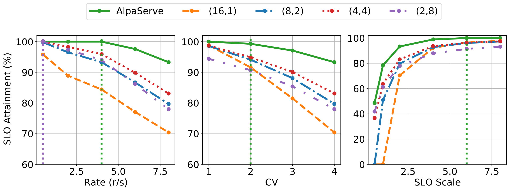
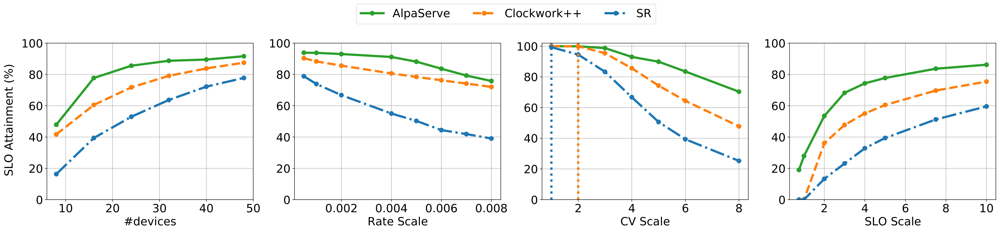
6.4 对变化流量模式的鲁棒性
迄今为止，AlpaServe的良好性能基于我们在布局算法中假设我们事先知道抵达过程。实际上，抵达过程可以通过历史迹近似，但不可避免的现实世界方差可能使预测不准确。在本实验中，我们研究了流量模式变化时AlpaServe的表现。
我们在第6.2节对S2@MAF1重复使用相同设置，但这次AlpaServe和SR从MAF1随机切入两条一小时的痕迹，一条是它们算法假设的，另一条作为实际到达过程。而对于Clockwork++，我们仍然直接在实际到达过程中运行算法，以尊重其在线特性。同样，我们会变换不同因素，并计算每个系统的 SLO 达成。我们重复实验三次，平均结果见图 25岁。
毫不意外，当流量变化时，SR的性能会大幅下降。相比之下，AlpaServe保持良好性能，且仍优于Clockwork++，这是一种在线调整算法，采用由截然不同的流量模式生成的静态位置。这证实了，面对高度动态的流量模式，带模型并行的统计复用比现有基于复制或替换的算法更简单且更优。
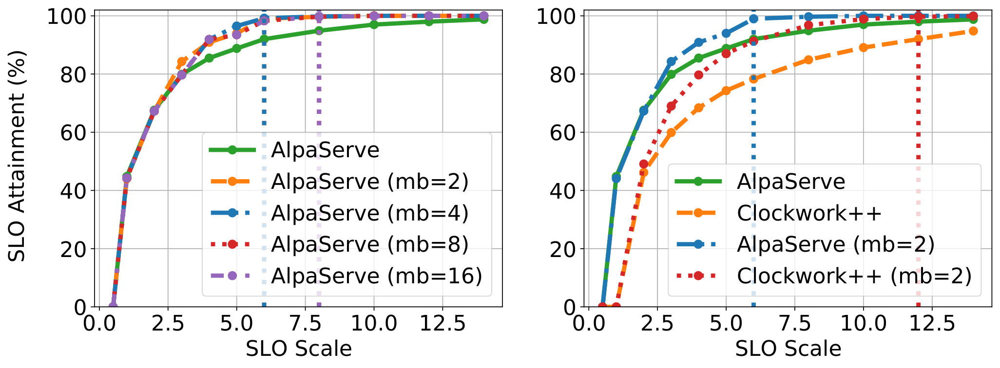
6.5 动态batch的优势
batch是其他服务系统中常见的优化方式，batch大小的选择对性能至关重要，因为它能提高GPU利用率，从而提高系统吞吐量。然而，在大型模型场景中，batch的好处主要受限于两个原因。首先，对于大型模型，小批量会让GPU饱和，这意味着batch 处理更多请求几乎没有什么收益。其次，执行延迟随着batch规模线性增长，所以当SLO很紧（比如SLO规模小于2）时，batch根本不是选择。
为了隔离模型并行的好处并使结果更易解释，我们决定在其他实验中禁用任何batch，但证明该batch策略完全与本篇论文的讨论范围正交。为证明这一点，我们在AlpaServe中实现了标准batch算法并评估其性能。
batch 处理策略。 当请求到达时，如果有任何设备组可用，请求会立即执行。否则，它会被放入每个模型的请求队列进行batch。当设备组进入空闲状态时，它会选择带有副本的模型，并尽可能多地从该模型的请求队列中batch 处理请求，同时满足SLO要求。
布置。 随着模型规模的增大，batch的潜在益处会减少。因此，我们选择评估模型集 S1。我们生成合成伽马过程流量，平均每秒4个请求，每个模型的计算机生成4个请求。
SLO 达成率。26（左）展示了AlpaServe在不同SLO尺度下，最大batch大小设置下的SLO实现。当SLO要求严格时，任何batch处理都会违反SLO，所以启用batch时没有增益。此外，虽然我们选择在标签页1中服务最小型号，但像2这样的小批量和2048的长序列长度已经让GPU过饱和，因此最大批量更大并不会带来性能提升。26（右）比较了启用batch算法后 AlpaServe 和 Clockwork++ 的改进。8 当SLO要求放宽时，AlpaServe和Clockwork++在某种程度上都能获得更好的SLO实现。由于即使不进行batch，AlpaServe 的性能也良好，且不同batch大小的batch请求在运算间并行中会出现阶段不平衡和流水线气泡，因此 Clockwork++ 的绝对提升略有提升。
6.6 消融研究
本节将研究我们提出的自动并行化（§4.1）和放置算法（§4.2）的有效性。
自动并行化的好处。 我们证明，自动并行化能力不仅使AlpaServe能够推广到任意模型架构，甚至还能降低并行开销——从而提升了服务性能（详见§3.3 ）。为此，事实 系统 中典型的手动模型并行化策略是为每个流水线阶段分配相等数量的（Transformer）层。这些策略往往无法在分布式GPU间实现负载平衡，因为现代大型模型存在异构层，如嵌入操作。§4.1 引入的扩展在计算图层面自动划分模型，并生成近乎平衡的阶段。从经验上看，如图所示。27，对于8个流水线阶段，自动并行化分别将Transformer1.3B和2.6B的总开销降低32.9%和46.7%，这对于使用模型并行进行服务时实现良好服务性能是必要的。
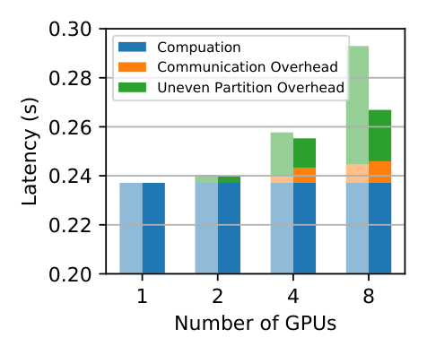
定位算法的有效性。 我们现在测试部署算法在合成工作负载上的有效性。我们在测试平台上服务最具挑战性的模型集S3（标签1）。模型的速率分布遵循幂律分布。每个模型的到达模式都属于伽马过程。评估了配置算法的三种变体。 轮询 是指以轮询方式放置模型，并为所有组使用四阶段流程。贪 婪配置 使用了我们的贪婪配置和四阶段流程，适用于所有群体。 贪婪配置 + 组划分 执行贪婪配置加组划分搜索。如图所示。28，要实现良好的SLO成就，必须同时进行分组和分组划分。左侧子图中，分组划分比贪婪放置时提高1.5\(\times\) ，而轮流分组则永远无法达到99%的SLO成就。在右侧子图中，分区增加了流量突发性，从而达到 \(1.3\times\)实现99%的SLO实现率。
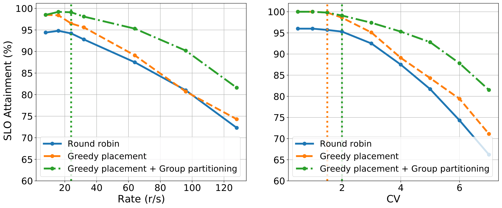
7 相关工作
模拟服务系统。 近年来，模型服务系统数量激增。这些系统包括通用的生产级系统，如TensorFlow Serserving和NVIDIA Triton，这些系统被广泛使用，但不支持自动放置或延迟约束。它们还包括为单模型服务或特定类别模型（例如Transformer）优化的系统。AlpaServe的目标车型和功能比这些系统更广泛。
对于SLO感知的分布式服务，大多数服务系统忽略模型间的布局级交互。例如，《发条》主要关注可预测性;调度时，它贪婪地加载并执行模型，运行在可用的 GPU 上。Shepherd利用抢占权来纠正次优的排班决策。对于大型模型，加载模型权重和抢占式很容易让实际的SLO不堪重负。其他系统如Clipper、Infaas和DVABach也不会考虑同址模型的延迟。
Nexus与我们的工作密切相关，因为它考察模型的定位;然而，Nexus是一个采用§3 中传统复制方法的系统示例，因此错过了本文中探讨的广泛潜在并行化策略类别。
大型模型的推理优化。AlpaServe是另一批关于大型模型推理优化工作的补充。这些技术包括量化、蒸馏、卸载、更好的算子并行性和CUDA核优化等技术。其中一些优化旨在遏制模型规模不断扩大的趋势;然而，这些成果都是部分性的——尽管有这些努力，服务大型模型的挑战仍在迅速升级。
用于训练的并行模型。AlpaServe在很大程度上与关于训练中模型并行的大量研究是正交的。如第3节所述，服务提供了一套独特的约束和机会，培训工作负载中没有。然而，这些系统与AlpaServe的交叉点在于其实现模型并行的方法。特别是，AlpaServe基于中引入的一些并行化技术。
资源分配和复用。 如何将有限资源复用到来的请求的问题是计算机科学中最古老的课题之一，并且在不同的应用领域中都有研究。近期关于DL调度的研究利用交换、抢占、交错和空间共享实现细粒度资源共享。相反，本文的贡献在于对这些思想在新兴领域——服务多个大型模型——的应用进行了深入的实证分析。
8 结论与未来工作
本文介绍了AlpaServe，一种用于预测多个大型深度学习模型的系统。AlpaServe的关键创新是将模型并行整合进多模型服务中。由于模型并行本身存在开销，这种并行性传统上被保守地应用——仅限于模型无法在单个GPU内或无法在所需SLO内执行的情况。AlpaServe展示了模型并行在许多其他场景中也很有用，量化了权衡，并提供了自动导航权衡空间的技术。
未来，我们将将AlpaServe扩展到更复杂的场景，包括服务多参数高效的适配模型（如LoRA）、带依赖的模型以及自回归模型。
致谢
我们感谢OSDI的评审者以及我们的牧者蔡海明给予的宝贵反馈。这项工作部分得到了NSF CISE远征奖CCF1730628、NSFC的资助号62172008，以及Astronomer、Google、IBM、Intel、Lacework、Microsoft、Nexla、三星SDS、Uber和VMware的捐赠支持。钟银敏和欣晋也在北京大学教育部高信心软件技术重点实验室工作。
\(^*\)平等贡献。↩︎
https://github.com/alpa-projects/mms↩︎
对于更大的服务，AlpaServe可以扩展为分层部署，每个控制器只管理部分设备，如。↩︎
本文重点介绍了通过一次前向传递进行推断的非自回归大型模型，但请注意，本文提出的技术可以扩展到像GPT-3这样的自回归模型。↩︎
对于MAF1，我们按照Clockwork设置窗口大小为60秒。对于MAF2，我们设定为5.4K秒。↩︎
在我们的集群测试平台中，每个GPU的内存是16GB，但由于需要存储激活和其他运行时上下文，模型权重的实际可用空间大约是13GB。↩︎
均匀分配结果也类似。↩︎
为了让数字更清晰，SR被省略了，因为它比Clockwork++还差。↩︎
完整图表补充
以下图表在原 LaTeX 中由自定义宏或多子图环境生成，正文转换时未能自动嵌入，现按源文件顺序补全。
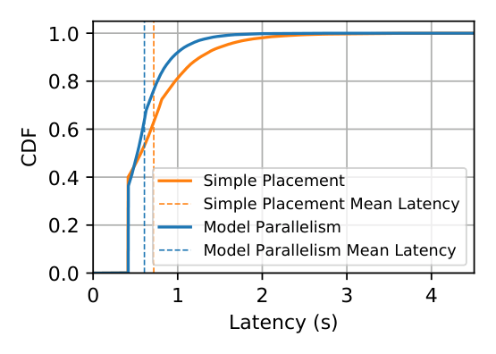
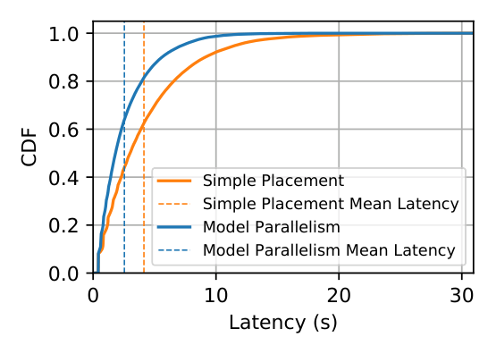
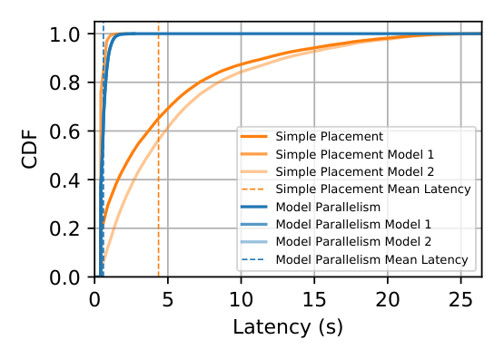
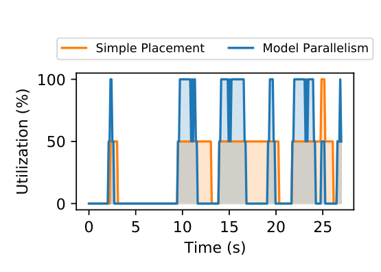
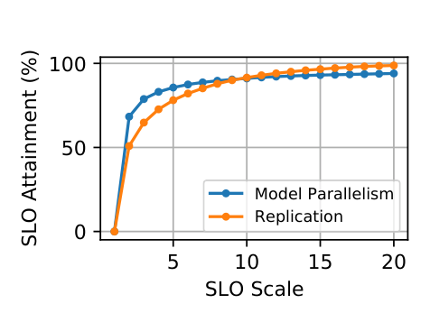

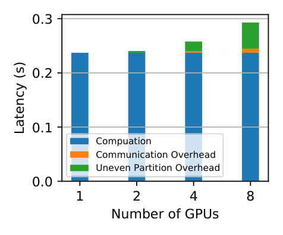

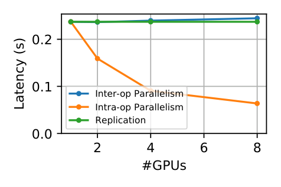


参考文献
Reza Yazdani Aminabadi, Samyam Rajbhandari, Minjia Zhang, Ammar Ahmad Awan, Cheng Li, Du Li, Elton Zheng, Jeff Rasley, Shaden Smith, Olatunji Ruwase, et al. Deepspeed inference: Enabling efficient inference of transformer models at unprecedented scale. , 2022.
Zhihao Bai, Zhen Zhang, Yibo Zhu, and Xin Jin. \(\{\)PipeSwitch\(\}\): Fast pipelined context switching for deep learning applications. In 14th USENIX Symposium on Operating Systems Design and Implementation (OSDI 20), pages 499–514, 2020.
Nirvik Baruah, Peter Kraft, Fiodar Kazhamiaka, Peter Bailis, and Matei Zaharia. Parallelism-optimizing data placement for faster data-parallel computations. , 16(4):760–771, 2022.
Anirban Bhattacharjee, Ajay Dev Chhokra, Zhuangwei Kang, Hongyang Sun, Aniruddha Gokhale, and Gabor Karsai. Barista: Efficient and scalable serverless serving system for deep learning prediction services. In 2019 IEEE International Conference on Cloud Engineering (IC2E), pages 23–33. IEEE, 2019.
Tom Brown, Benjamin Mann, Nick Ryder, Melanie Subbiah, Jared D Kaplan, Prafulla Dhariwal, Arvind Neelakantan, Pranav Shyam, Girish Sastry, Amanda Askell, et al. Language models are few-shot learners. , 33:1877–1901, 2020.
Aakanksha Chowdhery, Sharan Narang, Jacob Devlin, Maarten Bosma, Gaurav Mishra, Adam Roberts, Paul Barham, Hyung Won Chung, Charles Sutton, Sebastian Gehrmann, et al. Palm: Scaling language modeling with pathways. , 2022.
Copy.ai. Copy.ai: Write better marketing copy and content with ai. https://www.copy.ai/.
Daniel Crankshaw, Gur-Eyal Sela, Xiangxi Mo, Corey Zumar, Ion Stoica, Joseph Gonzalez, and Alexey Tumanov. Inferline: latency-aware provisioning and scaling for prediction serving pipelines. In Proceedings of the 11th ACM Symposium on Cloud Computing, pages 477–491, 2020.
Daniel Crankshaw, Xin Wang, Guilio Zhou, Michael J Franklin, Joseph E Gonzalez, and Ion Stoica. Clipper: A low-latency online prediction serving system. In 14th USENIX Symposium on Networked Systems Design and Implementation (NSDI 17), pages 613–627, 2017.
Weihao Cui, Han Zhao, Quan Chen, Hao Wei, Zirui Li, Deze Zeng, Chao Li, and Minyi Guo. Dvabatch: Diversity-aware multi-entry multi-exit batching for efficient processing of dnn services on gpus. In 2022 USENIX Annual Technical Conference (USENIX ATC 22), pages 183–198, 2022.
Tri Dao, Daniel Y Fu, Stefano Ermon, Atri Rudra, and Christopher Ré. Flashattention: Fast and memory-efficient exact attention with io-awareness. , 2022.
Robert I Davis, Ken W Tindell, and Alan Burns. Scheduling slack time in fixed priority pre-emptive systems. In 1993 Proceedings Real-Time Systems Symposium, pages 222–231. IEEE, 1993.
Tim Dettmers, Mike Lewis, Younes Belkada, and Luke Zettlemoyer. Llm. int8 (): 8-bit matrix multiplication for transformers at scale. , 2022.
Jacob Devlin, Ming-Wei Chang, Kenton Lee, and Kristina Toutanova. Bert: Pre-training of deep bidirectional transformers for language understanding. , 2018.
Mengnan Du, Subhabrata Mukherjee, Yu Cheng, Milad Shokouhi, Xia Hu, and Ahmed Hassan Awadallah. What do compressed large language models forget? robustness challenges in model compression. , 2021.
Jiarui Fang, Yang Yu, Chengduo Zhao, and Jie Zhou. Turbotransformers: an efficient gpu serving system for transformer models. In Proceedings of the 26th ACM SIGPLAN Symposium on Principles and Practice of Parallel Programming, pages 389–402, 2021.
William Fedus, Barret Zoph, and Noam Shazeer. Switch transformers: Scaling to trillion parameter models with simple and efficient sparsity. , 23(120):1–39, 2022.
Github. Github copilot: Your ai pair programmer. https://github.com/features/copilot.
Arpan Gujarati, Reza Karimi, Safya Alzayat, Wei Hao, Antoine Kaufmann, Ymir Vigfusson, and Jonathan Mace. Serving \(\{\)DNNs\(\}\) like clockwork: Performance predictability from the bottom up. In 14th USENIX Symposium on Operating Systems Design and Implementation (OSDI 20), pages 443–462, 2020.
Mingcong Han, Hanze Zhang, Rong Chen, and Haibo Chen. Microsecond-scale preemption for concurrent GPU-accelerated DNN inferences. In 16th USENIX Symposium on Operating Systems Design and Implementation (OSDI 22), pages 539–558, Carlsbad, CA, July 2022. USENIX Association.
Mingcong Han, Hanze Zhang, Rong Chen, and Haibo Chen. Microsecond-scale preemption for concurrent \(\{\)GPU-accelerated\(\}\)\(\{\)DNN\(\}\) inferences. In 16th USENIX Symposium on Operating Systems Design and Implementation (OSDI 22), pages 539–558, 2022.
Edward J. Hu, Yelong Shen, Phillip Wallis, Zeyuan Allen-Zhu, Yuanzhi Li, Shean Wang, Lu Wang, and Weizhu Chen. Lora: Low-rank adaptation of large language models, 2021.
Yanping Huang, Youlong Cheng, Ankur Bapna, Orhan Firat, Dehao Chen, Mia Chen, HyoukJoong Lee, Jiquan Ngiam, Quoc V Le, Yonghui Wu, et al. Gpipe: Efficient training of giant neural networks using pipeline parallelism. , 32, 2019.
Huggingface. Models - huggingface. https://huggingface.co/models.
Vatche Ishakian, Vinod Muthusamy, and Aleksander Slominski. Serving deep learning models in a serverless platform. In 2018 IEEE International Conference on Cloud Engineering (IC2E), pages 257–262. IEEE, 2018.
Andrei Ivanov, Nikoli Dryden, Tal Ben-Nun, Shigang Li, and Torsten Hoefler. Data movement is all you need: A case study on optimizing transformers. , 3:711–732, 2021.
Dmitry Lepikhin, HyoukJoong Lee, Yuanzhong Xu, Dehao Chen, Orhan Firat, Yanping Huang, Maxim Krikun, Noam Shazeer, and Zhifeng Chen. Gshard: Scaling giant models with conditional computation and automatic sharding. In International Conference on Learning Representations, 2020.
Zhuohan Li, Siyuan Zhuang, Shiyuan Guo, Danyang Zhuo, Hao Zhang, Dawn Song, and Ion Stoica. Terapipe: Token-level pipeline parallelism for training large-scale language models. In International Conference on Machine Learning, pages 6543–6552. PMLR, 2021.
Xiaoqiao Meng, Canturk Isci, Jeffrey Kephart, Li Zhang, Eric Bouillet, and Dimitrios Pendarakis. Efficient resource provisioning in compute clouds via vm multiplexing. In Proceedings of the 7th international conference on Autonomic computing, pages 11–20, 2010.
Deepak Narayanan, Aaron Harlap, Amar Phanishayee, Vivek Seshadri, Nikhil R Devanur, Gregory R Ganger, Phillip B Gibbons, and Matei Zaharia. Pipedream: generalized pipeline parallelism for dnn training. In Proceedings of the 27th ACM Symposium on Operating Systems Principles, pages 1–15, 2019.
Deepak Narayanan, Mohammad Shoeybi, Jared Casper, Patrick LeGresley, Mostofa Patwary, Vijay Korthikanti, Dmitri Vainbrand, Prethvi Kashinkunti, Julie Bernauer, Bryan Catanzaro, Amar Phanishayee, and Matei Zaharia. Efficient large-scale language model training on gpu clusters using megatron-lm. In Proceedings of the International Conference for High Performance Computing, Networking, Storage and Analysis, SC ’21, New York, NY, USA, 2021. Association for Computing Machinery.
NVIDIA. Fastertransformer. https://github.com/NVIDIA/FasterTransformer.
NVIDIA. Triton inference server. https://developer.nvidia.com/nvidia-triton-inference-server.
Christopher Olston, Noah Fiedel, Kiril Gorovoy, Jeremiah Harmsen, Li Lao, Fangwei Li, Vinu Rajashekhar, Sukriti Ramesh, and Jordan Soyke. Tensorflow-serving: Flexible, high-performance ml serving. , 2017.
OpenAI. Chatgpt. https://chat.openai.com/chat.
Reiner Pope, Sholto Douglas, Aakanksha Chowdhery, Jacob Devlin, James Bradbury, Anselm Levskaya, Jonathan Heek, Kefan Xiao, Shivani Agrawal, and Jeff Dean. Efficiently scaling transformer inference. , 2022.
Samyam Rajbhandari, Jeff Rasley, Olatunji Ruwase, and Yuxiong He. Zero: Memory optimizations toward training trillion parameter models. In SC20: International Conference for High Performance Computing, Networking, Storage and Analysis, pages 1–16. IEEE, 2020.
KV Rashmi, Mosharaf Chowdhury, Jack Kosaian, Ion Stoica, and Kannan Ramchandran. Ec-cache: Load-balanced, low-latency cluster caching with online erasure coding. In 12th USENIX Symposium on Operating Systems Design and Implementation (OSDI 16), pages 401–417, 2016.
Stewart Robinson. . Bloomsbury Publishing, 2014.
Francisco Romero, Qian Li, Neeraja J. Yadwadkar, and Christos Kozyrakis. : Automated model-less inference serving. In 2021 USENIX Annual Technical Conference (USENIX ATC 21), pages 397–411. USENIX Association, July 2021.
Victor Sanh, Lysandre Debut, Julien Chaumond, and Thomas Wolf. Distilbert, a distilled version of bert: smaller, faster, cheaper and lighter. , 2019.
Mohammad Shahrad, Rodrigo Fonseca, Íñigo Goiri, Gohar Chaudhry, Paul Batum, Jason Cooke, Eduardo Laureano, Colby Tresness, Mark Russinovich, and Ricardo Bianchini. Serverless in the wild: Characterizing and optimizing the serverless workload at a large cloud provider. In 2020 USENIX Annual Technical Conference (USENIX ATC 20), pages 205–218, 2020.
Noam Shazeer, Youlong Cheng, Niki Parmar, Dustin Tran, Ashish Vaswani, Penporn Koanantakool, Peter Hawkins, HyoukJoong Lee, Mingsheng Hong, Cliff Young, Ryan Sepassi, and Blake Hechtman. : Deep learning for supercomputers. In Neural Information Processing Systems, 2018.
Haichen Shen, Lequn Chen, Yuchen Jin, Liangyu Zhao, Bingyu Kong, Matthai Philipose, Arvind Krishnamurthy, and Ravi Sundaram. Nexus: A gpu cluster engine for accelerating dnn-based video analysis. In Proceedings of the 27th ACM Symposium on Operating Systems Principles, pages 322–337, 2019.
Mohammad Shoeybi, Mostofa Patwary, Raul Puri, Patrick LeGresley, Jared Casper, and Bryan Catanzaro. Megatron-lm: Training multi-billion parameter language models using model parallelism. , 2019.
John F Shortle, James M Thompson, Donald Gross, and Carl M Harris. , volume 399. John Wiley & Sons, 2018.
Ashish Vaswani, Noam Shazeer, Niki Parmar, Jakob Uszkoreit, Llion Jones, Aidan N Gomez, Łukasz Kaiser, and Illia Polosukhin. Attention is all you need. , 30, 2017.
Qizhen Weng, Wencong Xiao, Yinghao Yu, Wei Wang, Cheng Wang, Jian He, Yong Li, Liping Zhang, Wei Lin, and Yu Ding. Mlaas in the wild: Workload analysis and scheduling in large-scale heterogeneous gpu clusters. In 19th USENIX Symposium on Networked Systems Design and Implementation (NSDI 22), pages 945–960, 2022.
Bingyang Wu, Zili Zhang, Zhihao Bai, Xuanzhe Liu, and Xin Jin. Transparent GPU sharing in container clouds for deep learning workloads. In 20th USENIX Symposium on Networked Systems Design and Implementation (NSDI 23), pages 69–85, Boston, MA, April 2023. USENIX Association.
Yuanzhong Xu, HyoukJoong Lee, Dehao Chen, Blake Hechtman, Yanping Huang, Rahul Joshi, Maxim Krikun, Dmitry Lepikhin, Andy Ly, Marcello Maggioni, et al. Gspmd: general and scalable parallelization for ml computation graphs. , 2021.
Gyeong-In Yu, Joo Seong Jeong, Geon-Woo Kim, Soojeong Kim, and Byung-Gon Chun. Orca: A distributed serving system for transformer-based generative models. In 16th USENIX Symposium on Operating Systems Design and Implementation (OSDI 22), pages 521–538, 2022.
Hong Zhang, Yupeng Tang, Anurag Khandelwal, and Ion Stoica. \(\{\)SHEPHERD\(\}\): Serving \(\{\)DNNs\(\}\) in the wild. In 20th USENIX Symposium on Networked Systems Design and Implementation (NSDI 23), pages 787–808, 2023.
Susan Zhang, Stephen Roller, Naman Goyal, Mikel Artetxe, Moya Chen, Shuohui Chen, Christopher Dewan, Mona Diab, Xian Li, Xi Victoria Lin, et al. Opt: Open pre-trained transformer language models. , 2022.
Yanqi Zhang, Íñigo Goiri, Gohar Irfan Chaudhry, Rodrigo Fonseca, Sameh Elnikety, Christina Delimitrou, and Ricardo Bianchini. Faster and cheaper serverless computing on harvested resources. In Proceedings of the ACM SIGOPS 28th Symposium on Operating Systems Principles, pages 724–739, 2021.
Yihao Zhao, Yuanqiang Liu, Yanghua Peng, Yibo Zhu, Xuanzhe Liu, and Xin Jin. Multi-resource interleaving for deep learning training. In Proceedings of the ACM SIGCOMM 2022 Conference, pages 428–440, 2022.
Lianmin Zheng, Zhuohan Li, Hao Zhang, Yonghao Zhuang, Zhifeng Chen, Yanping Huang, Yida Wang, Yuanzhong Xu, Danyang Zhuo, Joseph E Gonzalez, et al. Alpa: Automating inter-and intra-operator parallelism for distributed deep learning. In 16th USENIX Symposium on Operating Systems Design and Implementation (OSDI 22), 2022.
Zhe Zhou, Xuechao Wei, Jiejing Zhang, and Guangyu Sun. Pets: A unified framework for parameter-efficient transformers serving. In 2022 USENIX Annual Technical Conference (USENIX ATC 22), pages 489–504, 2022.